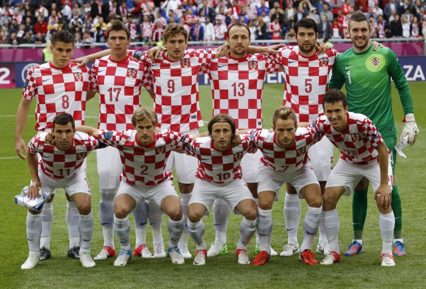

COPAS QUE JÁ PARTICIPOU:
A seleção croata participou de quatro edições da Copa do Mundo de futebol. Em 1998 a Croácia participou de sua primeira Copa do Mundo de futebol como país independente da Iugoslávia e chegou ao 3º lugar da competição, sua melhor participação em mundiais.

PREMIAÇÕES QUE JÁ ALCANÇOU
Não obteve títulos em Copa do Mundo.
NOME DO TÉCNICO:
Dalić
PRINCIPAIS JOGADORES
Modrić
Kovačić
Kramarić
Tabela de jogos
| Data/Hora | Estádio | Adversário |
|---|---|---|
| 23 nov 2022 / 13h00 | Estádio Al Bayt | Marrocos |
| 27 nov 2022 / 19h00 | Estádio Internacional Khalifa | Canadá |
| 1º dez 2022 / 18h00 | Estádio Ahmed bin Ali | Bélgica |